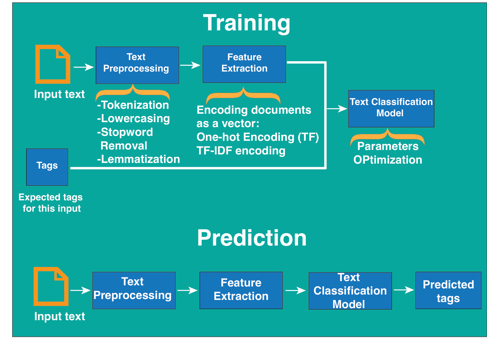

The process had become more than one classifier
The early experiment was a sequence of separate calls. The later version made that sequence part of one object: clean the description, remove common words, lemmatise, extract its word features, apply TF-IDF, and pass it to a classifier.
This is the stage I remember reaching as I learned about pipelines. The repository records custom text transformers in late August, lemmatisation added to the shared pipeline on September 3, and TF-IDF added afterward on the same date. In November, the entry script accepts a classifier argument and calls it with a random forest.
Teaching the pipeline how to handle a description
class FeatureSelector(BaseEstimator, TransformerMixin):
def __init__(self, feature_names):
self.feature_names = feature_names
def fit(self, X, y=None):
return self
def transform(self, X, y=None):
return X[
self.feature_names].tolist()The earlier steps operate on a table. FeatureSelector extracts Description as a list of strings for the vectorizer. Its fit returns the transformer itself; transform performs the operation. That shared interface allows each preparation step to participate in the pipeline.
class LemmatizeWord(BaseEstimator, TransformerMixin):
def __init__(self, col_name):
self.col_name = col_name
self.lemmatizers = WordNetLemmatizer()
def fit(self, X, y=None):
return self
def transform(self, X, y=None):
X[self.col_name] = X[self.col_name].apply(
lambda x: " ".join([self.lemmatizers.lemmatize(item) for item in x.split()]))
return XThe lemmatiser uses WordNet to transform the words in the selected column. It does not learn a new vocabulary from the training rows. CountVectorizer and TfidfTransformer, later in the chain, do learn from those rows. This difference helps explain what fitting the full object actually does.
One fitted path from descriptions to predictions
def ML_analysis_separated_data(training_cleaned_data, cleaned_test_data ,column_target,classifier,label="Level"):
X_train = training_cleaned_data.drop(column_target, axis=1)
y_train = training_cleaned_data[column_target].values
X_test = cleaned_test_data.drop(column_target, axis=1)
y_test = cleaned_test_data[column_target].values
full_pipeline = Pipeline(steps=[('pre_regular_exp', CleaningTextRegularExp('Description')),
('pre_stop_words', removing_stop_words('Description','english')),
('pre_lemmatize', LemmatizeWord('Description')),
('Pre_selector', FeatureSelector('Description')),
('vectorized', CountVectorizer()),
('tfidf', TfidfTransformer()),
])
full_pipeline_m = Pipeline(steps=[('full_pipeline', full_pipeline),
('model', classifier())])
full_pipeline_m.fit(X_train, y_train)
y_pred = full_pipeline_m.predict(X_test)
print_summary(y_test, y_pred,
training_cleaned_data, label)
plot.plot_confusion_matrix(y_test, y_pred,
classes=training_cleaned_data.groupby(
'Cat_level').count().index,
title='Confusion matrix, without normalization')The first pipeline holds the text transformations. The outer pipeline appends classifier(), so the same text handling can feed different classifiers. fit learns the vectorizer vocabulary, TF-IDF weights, and model from the training table. predict sends another table through those fitted steps.
The selector takes only Description into word extraction. Type_of_Job and the retained readable category label are present in the surrounding table but are not model features in this chain. Level is removed from X and passed separately as y.
This later function fits on one supplied training table and predicts another; it is not itself a parameter search. The earlier search scripts show cross-validation and optimisation, while this function shows the connected end-to-end handling.
The poster captured this connected view


The two paths in the poster capture the distinction between learning and prediction. The training path uses known labels to fit the classifier. The prediction path applies the fitted handling to text whose label is being predicted.
The later entry script supplies the classifier to the shared function. Logistic regression and Naive Bayes are available in the imports; its main call uses RandomForestClassifier. The saved figures document comparisons among those three approaches.
from sklearn.ensemble import RandomForestClassifier
loading_data(
'demodata_training_full_v1.csv',
'demodata.csv',
RandomForestClassifier,
)A random forest learns many decision trees from the numeric word features and combines their class estimates. Each tree makes a sequence of splits, allowing a different kind of relationship from logistic regression’s weighted terms or Naive Bayes’ term-frequency probabilities. Passing the classifier into the shared workflow lets me change that learning step while retaining the text preparation.
The clearer structure also made unfinished parts visible
Keeping the preparation together helps reveal where assumptions still sit outside it. The entry script encodes training and test labels separately. That produces compatible codes here because both files contain the same six categories; a future dataset missing a category would need one shared fitted label mapping.
Another transformer experiment, module_transformer_1.py, contains a recursive preprocessor call. The final entry uses module_transformers.py instead. I keep that experimental detour in the history, rather than present every archived file as the chosen implementation.
The next chapter returns to the original poster and reads what the predictions actually showed.
Based on the original project code and records. Historical results and retrospective checks are identified in the text. Personal file paths are omitted from examples.